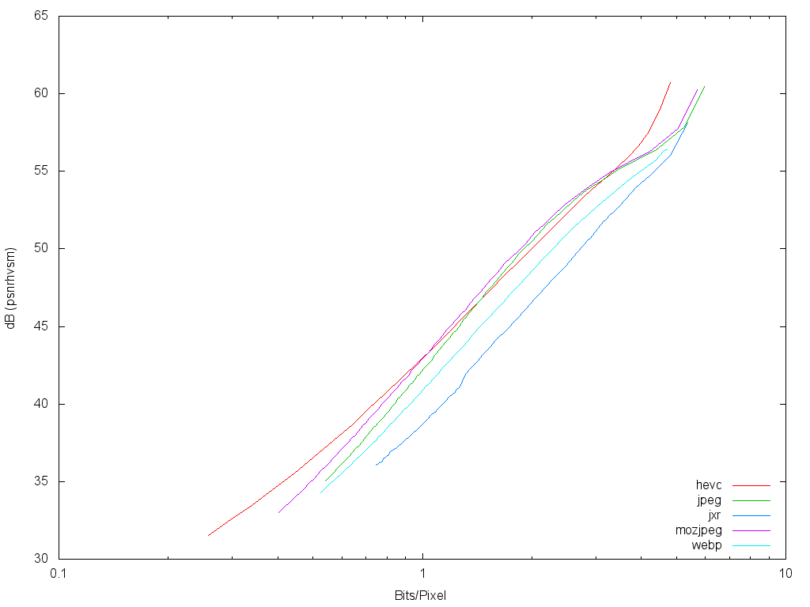
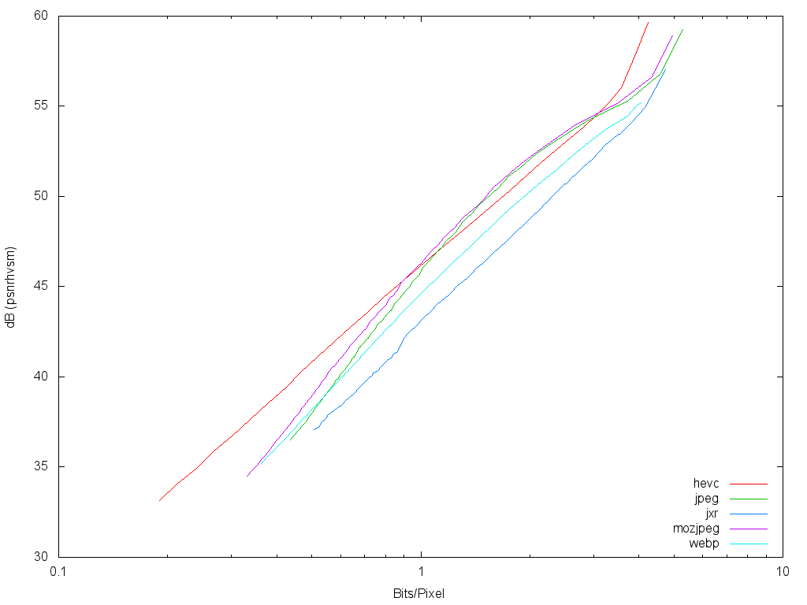
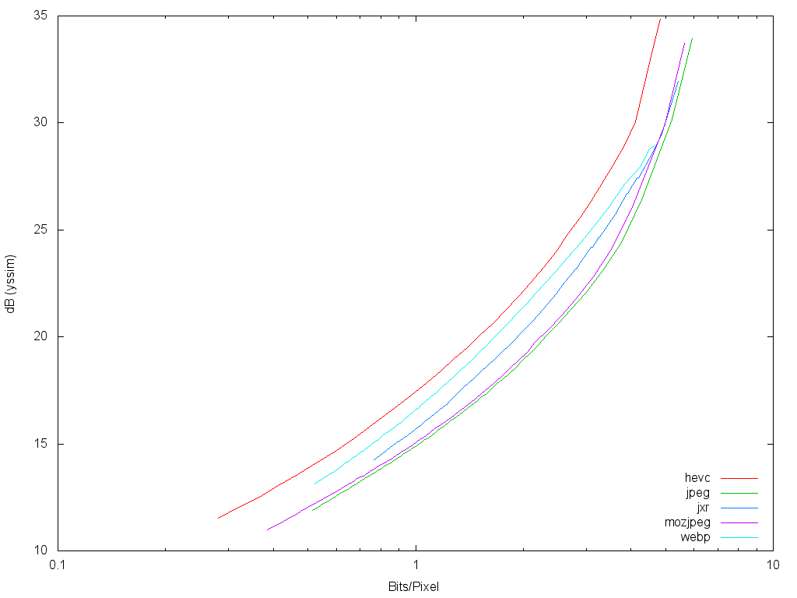
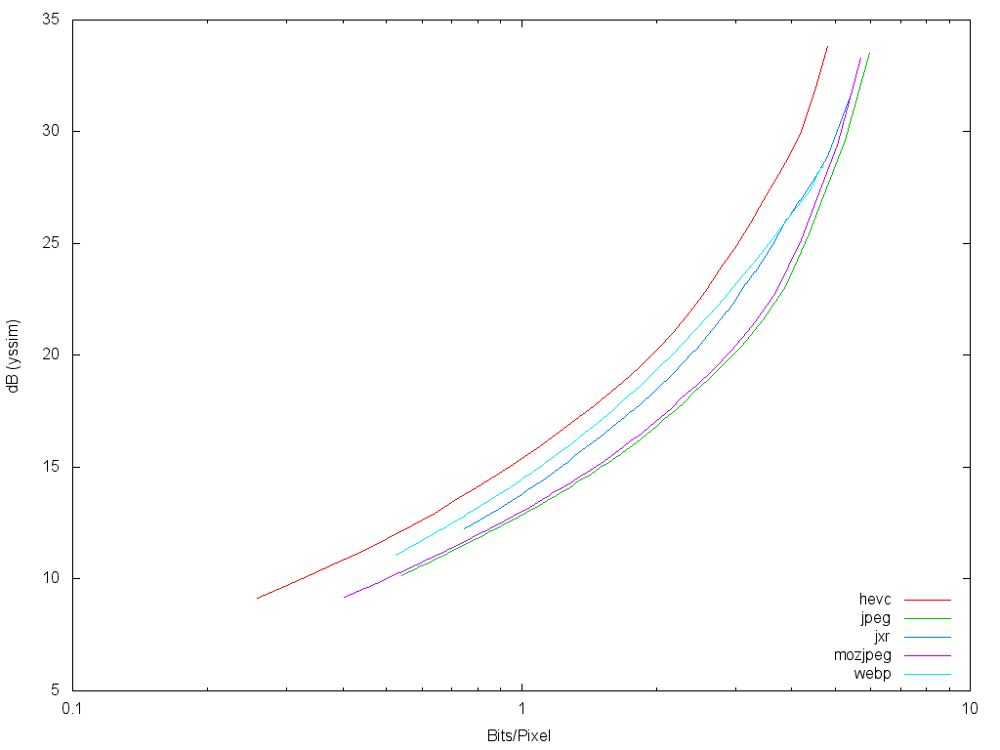
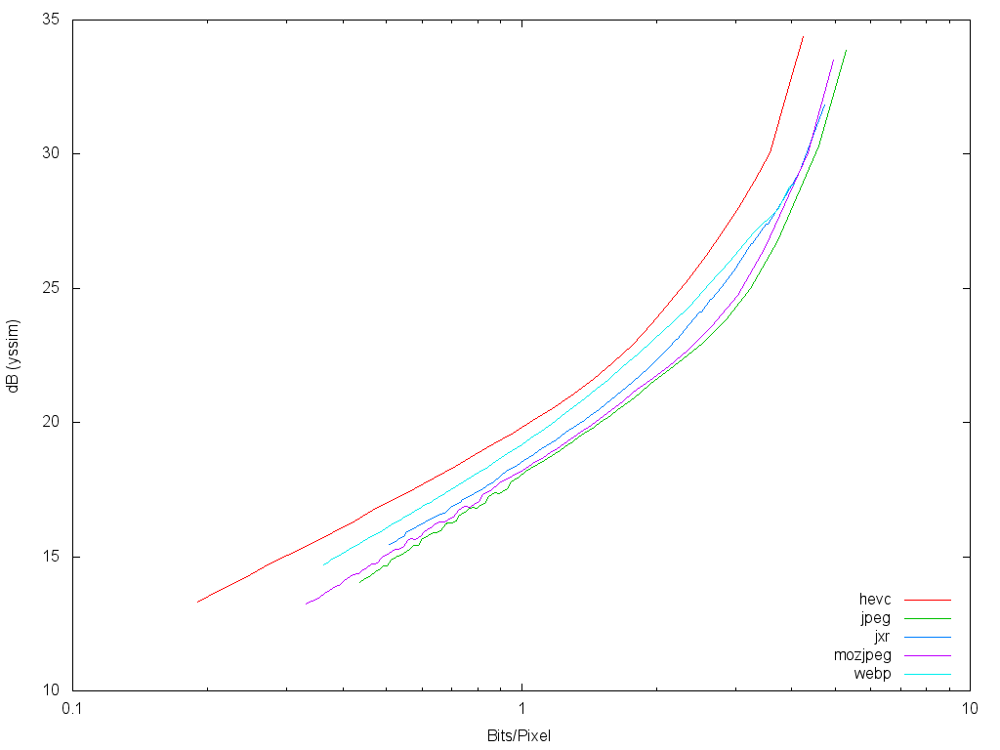
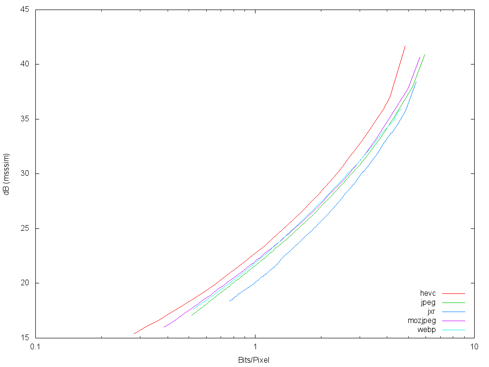
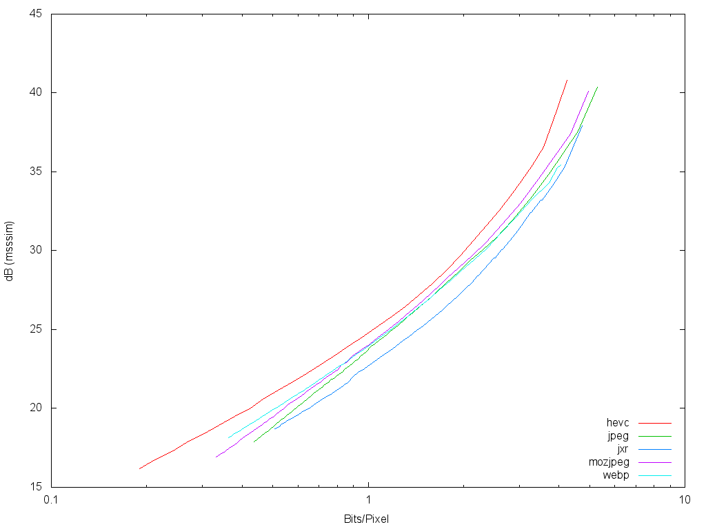
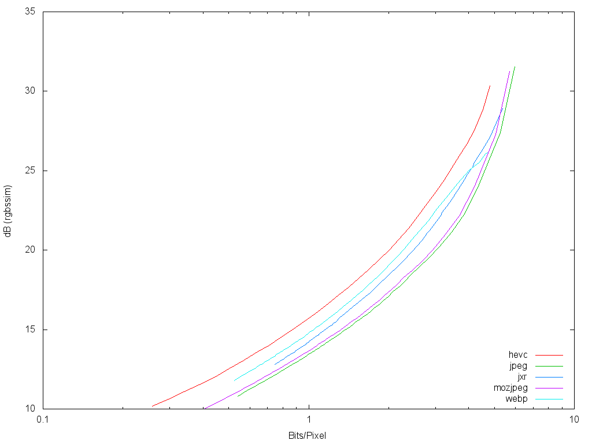
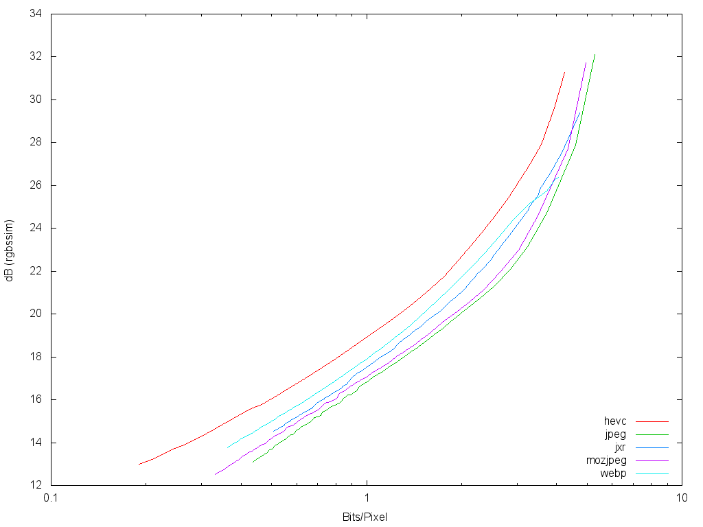

This study compares the compression performance of four different image formats: JPEG, WebP, JPEG XR, and HEVC-MSP. The latter two formats were chosen because they are frequently discussed as possible JPEG successors. Two different JPEG encoders are tested, libjpeg-turbo and mozjpeg.
It is our intent to only address compression performance in this study. Other technical, legal, and market factors that might be considered when evaluating codecs are outside the scope of this study.
We chose to test with four algorithms:
All of these algorithms compare two images and return a number indicating the degree to which the second image is similar to the first. In all cases, no matter what the scale, higher numbers indicate a higher degree of similarity.
It's unclear which algorithm is best in terms of human visual perception, so we tested with four of the most respected algorithms.
All results should be easily reproducible using publicly available tools. The following software is used to generate results for this study:
libjpeg-turbo to
encode and decode JPEG images. This study uses version 1.3.1.mozjpeg to
encode JPEG images for mozjpeg results. This study uses version 2.0.libwebp to
encode and decode WebP images. This study uses version 0.4.0.jxrlib to
encode and decode JPEG XR images. This study uses git revision ccf11047dbec.TAppEncoderStatic
and TAppDecoderStatic programs. Both programs are part of the
jctvc-hm
software package. No wrapper is needed as these programs accept and output CCIR 601
full-range Y'CbCr 4:2:0. This study uses r3928 of the SVN-based source code.identify is used to extract width and height information from images, and
convert is used to convert between PNG and PPM formats. Both tools are
part of the ImageMagick tools.
This study uses version 6.8.6-3.PNG test images are converted to CCIR 601 full-range Y'CbCr 4:2:0, which is then fed directly into the encoders. The encoders produce an image in their respective formats. We record the size of the resulting encoded image file. HEVC-MSP files are penalized 80 bytes per image file because HEVC-MSP is just a bitstream with no container. This penalty approximates the size of container data. This encoded image is then decoded back to CCIR 601 full-range Y'CbCr 4:2:0, the same format the encoder was given to encode. Quality scores are calculated on the basis of the Y'CbCr image that was fed to the encoder and the decoded Y'CbCr image.
This is done for each possible quality level (encoders typically have about 100 possible
quality levels). See the rd_collect.py script for more information.
After collecting encoded image size and quality metrics for each image at each quality
level, we average the file sizes and quality scores across all images. Quality scores are
weighted by pixel count. See the rd_average.py script for more information.
Note: Three of the metrics we use operate only on the luma plane, disregarding chroma (Y-SSIM, MS-SSIM, and PSNR-HVS-M). One metric combines the results for the luma and chroma planes after color conversion (RGB-SSIM). An issue with luma-only metrics is that they disregard chroma while encoded file size is inclusive of bits encoding chroma. Metrics that take chroma into account do so by averaging the results for each plan, which is problematic because we are not aware of any evidence that this is an accurate method. It's clear that luma is significantly more important to human visual perception than chroma, and it isn't clear how or to what extent chroma should be taken into account. Averaging is something of a haphazard guess, one which could well be exaggerating the impact of chroma. This is an area in which we'd like to see more research done. Historically, luma-only metrics have been found to be reasonably accurate, even for color images, as there is typically a strong correllation between luma and chroma planes in color image formats.
The following zip archive contains textual data (.out) files with the full results for this study. These can be opened with any text editor or imported into most spreadsheet programs.
The goal for this section is to visualize bits per pixel over the full range of quality options. In each graph, the Y axis represents quality and the X axis represents bits per pixel. There is one graph for each image set.
|  |
|  |
The goal for this section is to visualize bits per pixel over the full range of quality options. In each graph, the Y axis represents quality and the X axis represents bits per pixel. There is one graph for each image set.
|  |
|  |
|  |
The goal for this section is to visualize bits per pixel over the full range of quality options. In each graph, the Y axis represents quality and the X axis represents bits per pixel. There is one graph for each image set.
|  |
|
|  |
The goal for this section is to visualize bits per pixel over the full range of quality options. In each graph, the Y axis represents quality and the X axis represents bits per pixel. There is one graph for each image set.
|  |
|  |